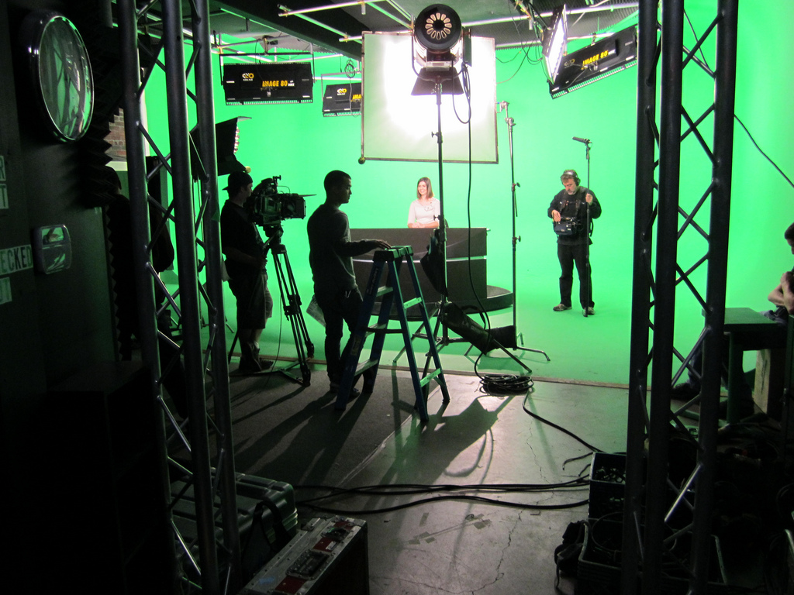

Film and television are very popular forms of media that increasingly grows
bigger every day. Whether it is going to see new movies in the theater,
watching what is shown on cable, or streaming shows through
numerous streaming sites, the average American adult watches 5 hours of television
a day. Most people know how to truly enjoy a new episode of their favorite show
or the sequel to their favorite movie, but very few people know the behind the scenes
and the difference between creating a television show or movie.
One reason many producers choose to create a television series rather than a
film is for the plotline. A TV series gives much more time for a story to be developed,
as it can be shown throughout an entire season, while a movie typically must
conclude within a couple hours. Due to the long amounts of time people generally
spend watching numerous seasons of a show, the audience forms an intimate bond
with the onscreen characters. This means we, as an audience, are invested in the
lives and fate of the characters. Television shows are also often able to mix multiple
genres into the one show, whereas a movie is typically limited to one.
However, many people believe movies are more effective than
TV shows. It is said that shows often drag their storyline out longer than needed,
and a two-hour timespan would be preferred. People argue shows become boring over time,
which can be the result of attempting to create an entire season's worth of episodes.
There are many differences in the behind the scenes making of both film and television.
There is a standard format in writing for a television show, depending on the type and length of the show, such as a sitcom or hour-long drama.
There are also breaks for commercials. It is more collaborative, with an entire crew of writers.
Writing a film has few limits and rules on structure and tone. While some writers are able to write
for both film and movie, many prefer writing for one or the other.
